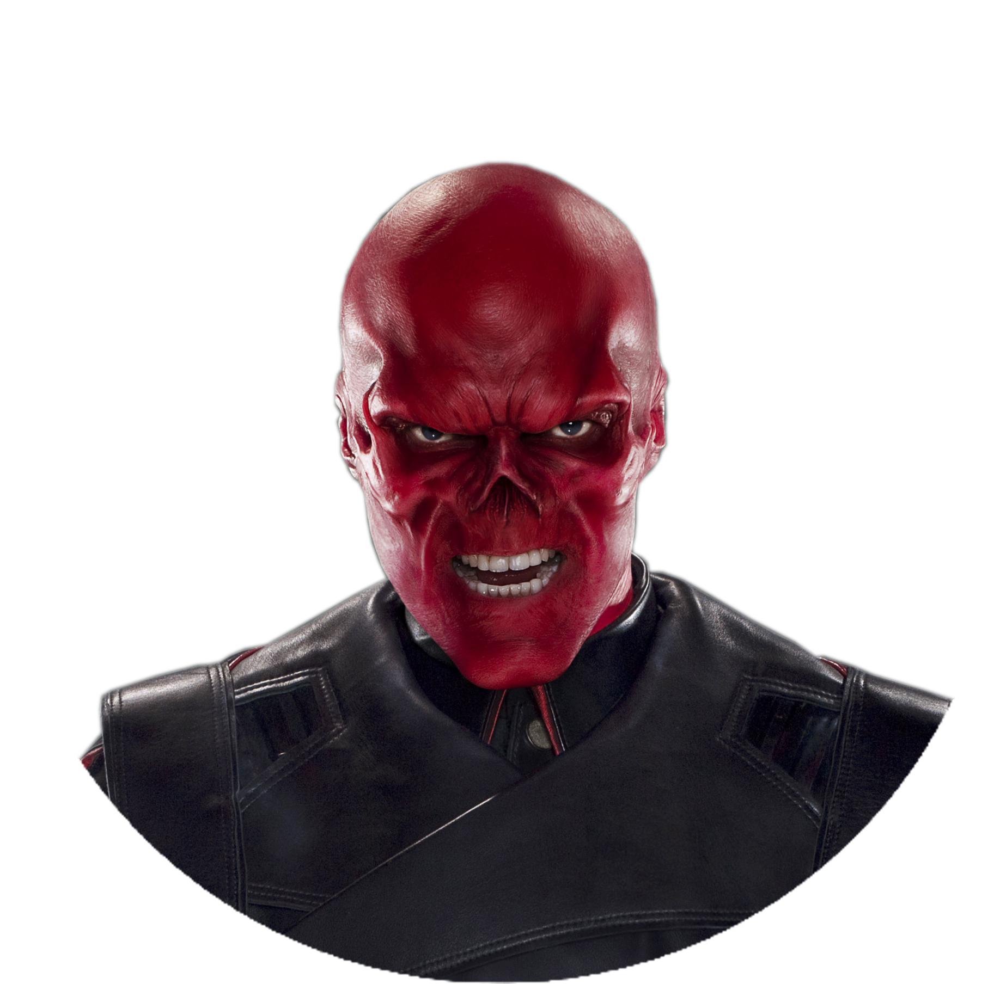

巴奇（Bucky）
原名為詹姆士·布坎南·「巴奇」·巴恩斯（James Buchanan "Bucky" Barnes），姆士·巴恩斯於1925年出生在印第安納州謝爾比維爾，是在美國參加二戰前喪生於維吉尼亞州的一名士兵的遺孤。他以吉祥物「巴奇」的身份被非正式地入伍。儘管穿著制服的他是個十幾歲的青少年，但卻十分熟習軍隊生活。他在裏海期間與當時軍營中最笨拙的士兵史蒂芬·羅傑斯私下結交，此時神秘的美國隊長報導開始頻見報端，巴奇開始崇拜這個人物。
原名為詹姆士·布坎南·「巴奇」·巴恩斯（James Buchanan "Bucky" Barnes），姆士·巴恩斯於1925年出生在印第安納州謝爾比維爾，是在美國參加二戰前喪生於維吉尼亞州的一名士兵的遺孤。他以吉祥物「巴奇」的身份被非正式地入伍。儘管穿著制服的他是個十幾歲的青少年，但卻十分熟習軍隊生活。他在裏海期間與當時軍營中最笨拙的士兵史蒂芬·羅傑斯私下結交，此時神秘的美國隊長報導開始頻見報端，巴奇開始崇拜這個人物。
|  |